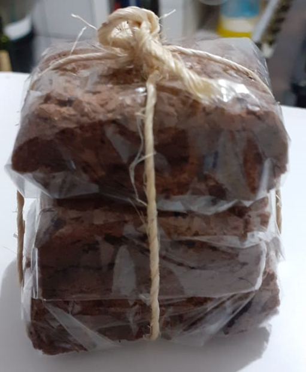
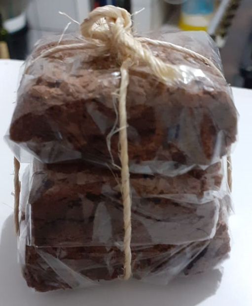

A Pizzaria Artesanal esta localizada na Pousada terra Doce e pode ser solicitada por delivery ou take away!
A pizza tem que estar perfeita e ser levada imediatamente para nossos amigos e clientes saborearem.
Existe um senso de distribuicao e beleza em cada unidade produzida.
Sobremesa
Claro que um doce nao pode faltar e sendo de chocolate fica ainda melhor...
 

Delicioso Brownie de chocolate para ser saboreado com sorvete de vanila, quentinho ou ao natural!!
Hummmmm... apos aquela pizza saborosa, chega a dar agua na boca!!
A Pousada Terra Doce

A Pousada Terra Doce fica a 200m da ponte que atravessa o rio para o mar, em Imbassai/ Bahia.
Utilizamos a estrutura da cozinha da pousada para confeccionar a sua deliciosa pizza.
O Chef
Neto Braga e um surfista apaixonado por cozinha que esta correndo atras do seu sonho de ser um famoso pizzaiolo.
Suas ideais sao construidas em conjunto com Vanessa Picozzi e sempre pensadas no bem e futuro do pequeno Noah.
Cada ingrediente precisa ser testado e aprovado unanimamente.
Participe desse sonho e solicite a sua pizza!!